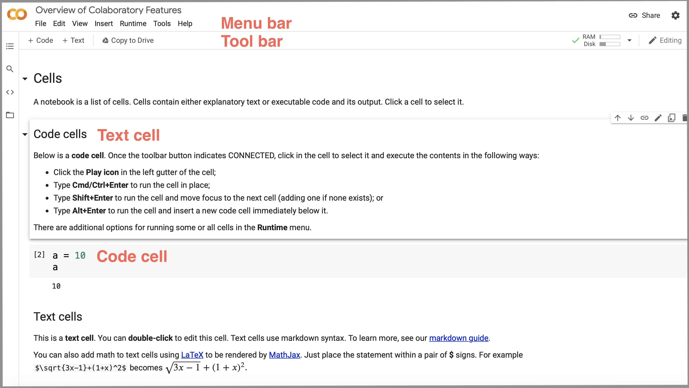

Python for Data Analysis on the Cloud¶
Get Started with Jupyter & Colab notebooks¶
In this course, we will use the Jupyter notebook on the Cloud in the form of Google Colaboratory.
The Jupyter Notebook is an open-source web application that allows you to create and share documents that contain live code, equations, visualisations and narrative text.
The Google Colaboratory or Colab for short is a free Jupyter notebook environment that runs on the Google Cloud and requires no setup.


You can view notebooks shared publicly without a Google sign-in. In order to execute and change code, a Google account sign-in is required. You can find more information on how to create a Google account here. You can learn more about the Colab and how to open a new notebook here.
Students with no Google account will have an opportunity to access the Jupyter notebook on the cloud via JupyterHub and The Littlest JupyterHub (also known as TLJH) in particular.
Learning resources¶
The Jupyter Notebook. Jupyter Team.
Jupyter Notebook Tutorial. DataCamp.
Get started with Google Colaboratory. Jake VanderPlas, Coding TensorFlow.
A hands-on introduction to Python for beginning programmers. Jessica McKellar, PyCon 2014.
Charles Severance. Python for Everybody: Exploring Data In Python 3.
David Amos et al. Python Basics: A Practical Introduction to Python. The authors make available sample chapters.
Getting Started With the Open Science Framework (OSF). Center for Open Science.
Structure of Colab notebook¶
The Colab notebook has a simple structure that consists of three parts:
Menubar
Toolbar
Cells
For an example of those features, see an example Colab notebook Overview of Colaboratory Features below.

Manage Jupyter Notebook Files¶
To open a new notebook:
File -> New notebook
To rename a notebook:
File -> Rename notebook
To access revision history:
File -> Revision history
To check whether the cells in your notebook are executable in linear order:
Runtime -> Restart and run all
To share your Colab notebook and collaborate, you can create a shareable link by clicking the Share button at the top right of your Colab notebook and specify the type of access (e.g., Anyone with the link can view the notebook). You can then copy and share the link with your collaborators.
Cells¶
The notebook has two types of cells: code and text. You can add new cells by using the + Code and + Text buttons that are in the toolbar above the notebook and also appear when you hover between a pair of cells.
Python Coding for Data Analysis¶
Below is a code cell, in which we type in the arithmetic expression 21 + 21.
The code is prefixed by a comment. Commenting your code is a good research practice and part of your reproducible workflow. Comments in Python’s code cells start with a hashtag symbol # followed by a white space character and some text. The text that follows the hashtag symbol on the same line is marked as a comment and is not therefore evaluated by the Python interpreter. Only the code (in this instance, “21 + 21”) is evaluated and the output (in this instance, “42”) will be displayed below the code cell.
To execute the cell, press Shift + Enter or click the Play icon on the left.
# Performing a basic arithmetic operation of addition
21 + 21
42
Python reads the code entered in the cell, evaluates it, and prints the result (42).
Create a toy data set and perform basic data analysis¶
Let’s create a list of the whole numbers (or integers) 4, 2, 8, 6.
Lists are one of the built-in data types in Python. Elements in a list are separated by comma , and are enclosed in square brackets []:
[4,2,8,6]
[4, 2, 8, 6]
Let’s assign the list of numbers to a variable called even_numbers using the =, which is called the assignment operator.
even_numbers = [4,2,8,6]
You can now apply built-in functions from the Python Standard Library to the variable even_numbers. A function is a block of code that:
takes input parameters
performs a specific task
returns an output.
Python has various built-in functions, including min(), max(), sorted(). Take the function min(). Using our example of even numbers above, the function min() will take as an input parameter the four numbers to compare, perform the comparison, and return the number with the lowest value.
We call a function by writing the function name followed by parenthesis. The function min() takes only one input parameter, the input data in the form of a list or another Python data type we will discuss later in the course. When we call the function, we pass our list even_numbers as an argument inside the parentheses.
An argument is different from a parameter, although the two terms are often used interchangeably. A parameter is the generic variable listed inside the parentheses of a function, whereas an argument is the actual value or data you pass to the function when you call it.
# Find the number with the lowest value
min(even_numbers)
2
We can apply any other built-in Python function. For example, the max() function returns, intuitively, the number with the highest value.
# Find the number with the highest value
max(even_numbers)
8
The function sorted() returns a sorted list of numbers in increasing order. We assign the resulting sorted list to a variable named sorted_even_numbers:
# Sort numbers in increasing order
sorted_even_numbers = sorted(even_numbers)
sorted_even_numbers
[2, 4, 6, 8]
Functions often have multiple parameters. For example, in addition to your input data, the sorted() function takes two optional parameters. One of these parameters is reverse. If you type in reverse = True, the list will be sorted in descending order:
sorted(even_numbers, reverse = True)
[8, 6, 4, 2]
Our list of even numbers is now sorted in descending order.
Descriptive statistics with NumPy¶
Functions for scientific computing, data analysis, machine learning, and statistical modeling are not in the Python Standard Library but are part of Python libraries or packages. For example, the Python library NumPy for scientific computing includes functions for computing the mean (average of the numbers) and standard deviation (variation or dispersion of the numbers from the mean).
To use NumPy, we first import the library and, by convention, give it the alias np.
# Import the NumPy library
import numpy as np
Now that we imported the module NumPy as np, you can view help on the module by typing the module alias followed by a question mark ?
np?
We now use np. to append each function we will use from NumPy, for example the functions mean() and std.
# Compute the mean of our list of numbers
np.mean(even_numbers)
5.0
# Compute the standard deviation of our list of numbers
np.std(even_numbers)
2.23606797749979
Getting help¶
In Colab, you use a question mark ? to access help information. For example, to access help information about a function in the Python Standard Library, such as min(), you type in
min?
Note
In Jupyter, you access help by pressing Shift + Tab when you are typing in a cell in edit mode. See this tutorial for the difference between edit mode and command mode.
# Get help about the NumPy function mean()
np.mean?

Loading real-world data with pandas¶
So far, we have used a toy data example. We will use the pandas library to load a real-world data set. We will learn about pandas next session, here will just use key data loading functionality. Let’s first import the pandas library and, by convention, give it the alias pd.
# Import the pandas library
import pandas as pd
Data on Covid-19 by Our World in Data¶
We will load and explore the Data on COVID-19 by Our World in Data (OWID). Details about the data are available on this GitHub repository:
It is updated daily and includes data on confirmed cases, deaths, hospitalizations, testing, and vaccinations as well as other variables of potential interest.
The data on COVID-19 by Our World in Data is provided as a comma-separated values (CSV) file. We load the CSV file into Python using the read_csv() function from pandas. There is no need to download the file on your local computer or the cloud. We just specify the URL and use the code below to load the most recent online version of the data. We also assign the loaded data set to a variable called owid_covid.
owid_covid = pd.read_csv('https://covid.ourworldindata.org/data/owid-covid-data.csv')
We can now perform various operations on the data object by using the so called methods. Examples of pandas methods are head() and tail(); head() displays by default the top five rows of the data and tail() displays by default the last five rows. You can display a custom number of row by passing that number in in the brackets.
Let’s display the top five rows using the method head():
# View the top five rows of the data set
owid_covid.head()
| iso_code | continent | location | date | total_cases | new_cases | new_cases_smoothed | total_deaths | new_deaths | new_deaths_smoothed | ... | gdp_per_capita | extreme_poverty | cardiovasc_death_rate | diabetes_prevalence | female_smokers | male_smokers | handwashing_facilities | hospital_beds_per_thousand | life_expectancy | human_development_index | |
|---|---|---|---|---|---|---|---|---|---|---|---|---|---|---|---|---|---|---|---|---|---|
| 0 | AFG | Asia | Afghanistan | 2020-02-24 | 1.0 | 1.0 | NaN | NaN | NaN | NaN | ... | 1803.987 | NaN | 597.029 | 9.59 | NaN | NaN | 37.746 | 0.5 | 64.83 | 0.511 |
| 1 | AFG | Asia | Afghanistan | 2020-02-25 | 1.0 | 0.0 | NaN | NaN | NaN | NaN | ... | 1803.987 | NaN | 597.029 | 9.59 | NaN | NaN | 37.746 | 0.5 | 64.83 | 0.511 |
| 2 | AFG | Asia | Afghanistan | 2020-02-26 | 1.0 | 0.0 | NaN | NaN | NaN | NaN | ... | 1803.987 | NaN | 597.029 | 9.59 | NaN | NaN | 37.746 | 0.5 | 64.83 | 0.511 |
| 3 | AFG | Asia | Afghanistan | 2020-02-27 | 1.0 | 0.0 | NaN | NaN | NaN | NaN | ... | 1803.987 | NaN | 597.029 | 9.59 | NaN | NaN | 37.746 | 0.5 | 64.83 | 0.511 |
| 4 | AFG | Asia | Afghanistan | 2020-02-28 | 1.0 | 0.0 | NaN | NaN | NaN | NaN | ... | 1803.987 | NaN | 597.029 | 9.59 | NaN | NaN | 37.746 | 0.5 | 64.83 | 0.511 |
5 rows × 59 columns
# View the last five rows of the data set
owid_covid.tail()
| iso_code | continent | location | date | total_cases | new_cases | new_cases_smoothed | total_deaths | new_deaths | new_deaths_smoothed | ... | gdp_per_capita | extreme_poverty | cardiovasc_death_rate | diabetes_prevalence | female_smokers | male_smokers | handwashing_facilities | hospital_beds_per_thousand | life_expectancy | human_development_index | |
|---|---|---|---|---|---|---|---|---|---|---|---|---|---|---|---|---|---|---|---|---|---|
| 94436 | ZWE | Africa | Zimbabwe | 2021-06-04 | 39144.0 | 52.0 | 32.286 | 1605.0 | 1.0 | 1.857 | ... | 1899.775 | 21.4 | 307.846 | 1.82 | 1.6 | 30.7 | 36.791 | 1.7 | 61.49 | 0.571 |
| 94437 | ZWE | Africa | Zimbabwe | 2021-06-05 | 39168.0 | 24.0 | 33.571 | 1605.0 | 0.0 | 1.571 | ... | 1899.775 | 21.4 | 307.846 | 1.82 | 1.6 | 30.7 | 36.791 | 1.7 | 61.49 | 0.571 |
| 94438 | ZWE | Africa | Zimbabwe | 2021-06-06 | 39189.0 | 21.0 | 35.000 | 1606.0 | 1.0 | 1.714 | ... | 1899.775 | 21.4 | 307.846 | 1.82 | 1.6 | 30.7 | 36.791 | 1.7 | 61.49 | 0.571 |
| 94439 | ZWE | Africa | Zimbabwe | 2021-06-07 | 39238.0 | 49.0 | 39.571 | 1611.0 | 5.0 | 2.429 | ... | 1899.775 | 21.4 | 307.846 | 1.82 | 1.6 | 30.7 | 36.791 | 1.7 | 61.49 | 0.571 |
| 94440 | ZWE | Africa | Zimbabwe | 2021-06-08 | 39321.0 | 83.0 | 46.143 | 1617.0 | 6.0 | 2.571 | ... | 1899.775 | 21.4 | 307.846 | 1.82 | 1.6 | 30.7 | 36.791 | 1.7 | 61.49 | 0.571 |
5 rows × 59 columns
Describe the Covid-19 data¶
In addition to pandas methods, we can use attributes to access information about the metadata. For example, the attribute shape gives the dimensions of a DataFrame.
# Number of rows and columns in the data set
owid_covid_shape = owid_covid.shape
owid_covid_shape
(94441, 59)
The returned object is called tuples. Like lists, tuples contain a collection of data elements. But unlike lists, which are mutable, tuples are immutable, meaning that the element values cannot change. Also, compared to lists in which elements are inside square brackets [], elements in tuples are inside parentheses ().
To access a particular value in tuple, we use the square brackets. For example, to access the first element (i.e., number of rows) of the tuple owid_covid_shape, we type in
owid_covid_shape[0]
94441
To access the second element (i.e., number of columns) of the tuple, we type in
owid_covid.shape[1]
59
Note that indexing in Python starts from 0, so first element is index 0, second is index 1, and so on.
As of 11 May 2021, the data set contains 87,310 rows and 59 columns. But this is a live data set in which the number of rows are updated daily. To display these updates, we could use the print() function. The line of code below contains background text in quotes '' and the up-to-date number of rows owid_covid.shape[0] and number of columns owid_covid.shape[1] that will be inserted in the sentence each time the cell is executed.
print('In the most current data on COVID-19 by Our World in Data, the number of rows is', owid_covid.shape[0], 'and the number of columns is', owid_covid.shape[1])
In the most current data on COVID-19 by Our World in Data, the number of rows is 94441 and the number of columns is 59
In addition to the dimensions of the data set, we can access other metadata using attributes. For example, we can access the column labels of the data set using the attribute columns:
owid_covid.columns
Index(['iso_code', 'continent', 'location', 'date', 'total_cases', 'new_cases',
'new_cases_smoothed', 'total_deaths', 'new_deaths',
'new_deaths_smoothed', 'total_cases_per_million',
'new_cases_per_million', 'new_cases_smoothed_per_million',
'total_deaths_per_million', 'new_deaths_per_million',
'new_deaths_smoothed_per_million', 'reproduction_rate', 'icu_patients',
'icu_patients_per_million', 'hosp_patients',
'hosp_patients_per_million', 'weekly_icu_admissions',
'weekly_icu_admissions_per_million', 'weekly_hosp_admissions',
'weekly_hosp_admissions_per_million', 'new_tests', 'total_tests',
'total_tests_per_thousand', 'new_tests_per_thousand',
'new_tests_smoothed', 'new_tests_smoothed_per_thousand',
'positive_rate', 'tests_per_case', 'tests_units', 'total_vaccinations',
'people_vaccinated', 'people_fully_vaccinated', 'new_vaccinations',
'new_vaccinations_smoothed', 'total_vaccinations_per_hundred',
'people_vaccinated_per_hundred', 'people_fully_vaccinated_per_hundred',
'new_vaccinations_smoothed_per_million', 'stringency_index',
'population', 'population_density', 'median_age', 'aged_65_older',
'aged_70_older', 'gdp_per_capita', 'extreme_poverty',
'cardiovasc_death_rate', 'diabetes_prevalence', 'female_smokers',
'male_smokers', 'handwashing_facilities', 'hospital_beds_per_thousand',
'life_expectancy', 'human_development_index'],
dtype='object')
Display a concise summary of the DataFrame using the method info()
owid_covid.info()
<class 'pandas.core.frame.DataFrame'>
RangeIndex: 94441 entries, 0 to 94440
Data columns (total 59 columns):
# Column Non-Null Count Dtype
--- ------ -------------- -----
0 iso_code 94441 non-null object
1 continent 89979 non-null object
2 location 94441 non-null object
3 date 94441 non-null object
4 total_cases 91358 non-null float64
5 new_cases 91355 non-null float64
6 new_cases_smoothed 90345 non-null float64
7 total_deaths 81395 non-null float64
8 new_deaths 81551 non-null float64
9 new_deaths_smoothed 90345 non-null float64
10 total_cases_per_million 90870 non-null float64
11 new_cases_per_million 90867 non-null float64
12 new_cases_smoothed_per_million 89862 non-null float64
13 total_deaths_per_million 80920 non-null float64
14 new_deaths_per_million 81076 non-null float64
15 new_deaths_smoothed_per_million 89862 non-null float64
16 reproduction_rate 76127 non-null float64
17 icu_patients 9514 non-null float64
18 icu_patients_per_million 9514 non-null float64
19 hosp_patients 11810 non-null float64
20 hosp_patients_per_million 11810 non-null float64
21 weekly_icu_admissions 861 non-null float64
22 weekly_icu_admissions_per_million 861 non-null float64
23 weekly_hosp_admissions 1496 non-null float64
24 weekly_hosp_admissions_per_million 1496 non-null float64
25 new_tests 42642 non-null float64
26 total_tests 42335 non-null float64
27 total_tests_per_thousand 42335 non-null float64
28 new_tests_per_thousand 42642 non-null float64
29 new_tests_smoothed 49436 non-null float64
30 new_tests_smoothed_per_thousand 49436 non-null float64
31 positive_rate 46602 non-null float64
32 tests_per_case 46003 non-null float64
33 tests_units 51035 non-null object
34 total_vaccinations 13879 non-null float64
35 people_vaccinated 13087 non-null float64
36 people_fully_vaccinated 10326 non-null float64
37 new_vaccinations 11611 non-null float64
38 new_vaccinations_smoothed 23938 non-null float64
39 total_vaccinations_per_hundred 13879 non-null float64
40 people_vaccinated_per_hundred 13087 non-null float64
41 people_fully_vaccinated_per_hundred 10326 non-null float64
42 new_vaccinations_smoothed_per_million 23938 non-null float64
43 stringency_index 79883 non-null float64
44 population 93819 non-null float64
45 population_density 87804 non-null float64
46 median_age 84634 non-null float64
47 aged_65_older 83680 non-null float64
48 aged_70_older 84165 non-null float64
49 gdp_per_capita 84918 non-null float64
50 extreme_poverty 57399 non-null float64
51 cardiovasc_death_rate 85024 non-null float64
52 diabetes_prevalence 87079 non-null float64
53 female_smokers 66553 non-null float64
54 male_smokers 65578 non-null float64
55 handwashing_facilities 42713 non-null float64
56 hospital_beds_per_thousand 77509 non-null float64
57 life_expectancy 89680 non-null float64
58 human_development_index 85190 non-null float64
dtypes: float64(54), object(5)
memory usage: 42.5+ MB
Let’s see what is the highest number of fully vaccinated adults in a country to date. We will use the variable people_fully_vaccinated_per_hundred and pandas’ max() method.
owid_covid['people_fully_vaccinated_per_hundred'].max()
114.67
Once we know the highest number of fully vaccinated adults per hundred, we determine the index of the observation (country) associated with that number using the pandas’ method idmax().
index_highest_vaccination = owid_covid['people_fully_vaccinated_per_hundred'].idxmax()
index_highest_vaccination
33704
Finally, we select the particular row (country in this case) by its location in the index using iloc.
owid_covid.iloc[[index_highest_vaccination]]
| iso_code | continent | location | date | total_cases | new_cases | new_cases_smoothed | total_deaths | new_deaths | new_deaths_smoothed | ... | gdp_per_capita | extreme_poverty | cardiovasc_death_rate | diabetes_prevalence | female_smokers | male_smokers | handwashing_facilities | hospital_beds_per_thousand | life_expectancy | human_development_index | |
|---|---|---|---|---|---|---|---|---|---|---|---|---|---|---|---|---|---|---|---|---|---|
| 33704 | GIB | Europe | Gibraltar | 2021-06-08 | NaN | NaN | NaN | NaN | NaN | NaN | ... | NaN | NaN | NaN | NaN | NaN | NaN | NaN | NaN | 79.93 | NaN |
1 rows × 59 columns
The above example is only for illustration of pandas functionality. We will unpack different approaches for data slicing and selecting with pandas in section Data Design and Data Wrangling.
Hands-on exercise: Let’s practice your Python skills¶
Open a new
Colabnotebook.Add a new
Codecell and include the following:Import the pandas library and add a comment describing your code
Load the Data on COVID-19 by Our World in Data and assign the data to a variable name. Use an informative variable name that clearly describes what the data is about; you can use underscores to separate words in your variable name, e.g. COVID19_Data_Our_World_in_Data. Add a comment.
For the loaded data set:
Show the first 20 observations/rows
Show the last 5 observations/rows
When ready, share your Colab notebook with the class:
Create a shareable link by clicking the Share button at the top right of your Colab notebook
Specify that Anyone with the link can view the notebook
Share the link with the class.
Before sharing your notebook, rerun your notebook from top to bottom using Restart and run all (under Runtime in the Colab menu bar) to ensure that your data analysis is computationally reproducible.
Markdown Text Cells¶
Double click a text cell to see the Markdown syntax used to format the text.
Headings¶
Headings begin with the hash symbol ‘#,’ followed by the space. There are six Headings. To create the largest heading, add one hash symbol, and to create the smallest heading, add six hash symbols.
# Header 1, Title example (Not shown below)
## Header 2, Subtitle example
### Header 3,
#### Header 4
##### etc.
Lists¶
* Item one (Note the space after *)
* Item two
* Item three
* Sub-bullet
* Sub-sub-bullet
Item one
Item two
Item three
Sub-bullet
Sub-sub-bullet
Bold and Italic Text¶
**This text is bold**
*This text is italic*
~This was mistaken text~
***This is both bold and italic text***
This text is bold
This text is italic
A second line of stricken code
This is both bold and italic text
Hyperlinks¶
Markdown allows you to create links to content on the web using the following syntax:
[Link title](https://)
For example, a hyperlink to the Project Jupyter would look like that:
[Project Jupyter](https://jupyter.org)
Hands-on exercise: Let’s practice your Markdown skills¶
Create a new
Colabnotebook file.Add a new
Textcell and include:
A notebook title (e.g. My Reproducible Research Workflow)
A bullet list with:
A bold word for
Author: and then add italised text for your name.A bold word for
Affiliation: and then add italised text for your University and Department.A bold word for
Date: and then add text for today’s date.
Add another Text cell and include:
A list of at least two online datasets about Covid-19 you find interesting.
Add a hyperlink to each database in your list and include the name of the database in the title of the hyperlink.
Add another Text cell and write a short research question you would be interesting in addressing using the Covid-19 datasets.
When you complete your exercise, download your notebook and make it available on an Open Science Framework (OSF) repository. You can download your Colab notebook from File and then Download .ipynb. You can learn how to create an OSF repository and deposit your notebook from the tutorial Getting Started With the Open Science Framework by the Center for Open Science.
This exercise draws on Earth Lab’s lesson Format Text In Jupyter Notebook With Markdown.